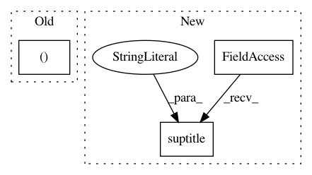

44e510ee7d49fe9e9126b2e1ecbd916a18450e84,examples/2d/plot_filters.py,,,#,40
Before Change
filter_c = np.fft.fftshift(filter_c)
axs[i // L, i % L].imshow(colorize(filter_c))
axs[i // L, i % L].axis("off")
axs[i // L, i % L].set_title("$j = {}$ \n $\\theta={}".format(i // L, i % L))
i = i+1
After Change
filter_c = fft2(f)
filter_c = np.fft.fftshift(filter_c)
plt.suptitle("The corresponding low-pass filter, also known as scaling function."
"Color saturation and color hue respectively denote complex magnitude and complex phase", fontsize=13)
filter_c = np.abs(filter_c)
plt.imshow(filter_c)
In pattern: SUPERPATTERN
Frequency: 4
Non-data size: 3
Instances
Project Name: kymatio/kymatio
Commit Name: 44e510ee7d49fe9e9126b2e1ecbd916a18450e84
Time: 2018-11-25
Author: edouard.oyallon@centralesupelec.fr
File Name: examples/2d/plot_filters.py
Class Name:
Method Name:
Project Name: matplotlib/matplotlib
Commit Name: 43648ca19772e43f771c59fcbc6096423521feb9
Time: 2020-02-27
Author: anntzer.lee@gmail.com
File Name: examples/text_labels_and_annotations/usetex_fonteffects.py
Class Name:
Method Name:
Project Name: matplotlib/matplotlib
Commit Name: ac69b1035a42e47798e4ea7167f616754be49452
Time: 2020-05-01
Author: toddrjen@gmail.com
File Name: examples/ticks_and_spines/tick-formatters.py
Class Name:
Method Name:
Project Name: scikit-learn/scikit-learn
Commit Name: 45a6ef7b722811ff1dfdc76652a144190c9e0ef8
Time: 2020-06-15
Author: madhura@predictivehire.com
File Name: examples/inspection/plot_partial_dependence.py
Class Name:
Method Name: